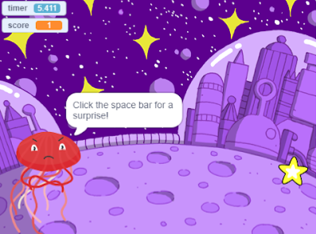
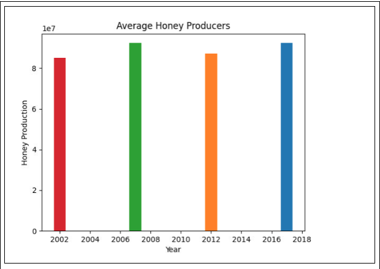
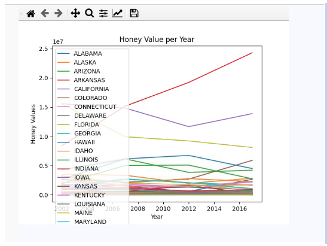
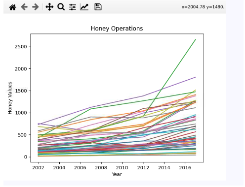
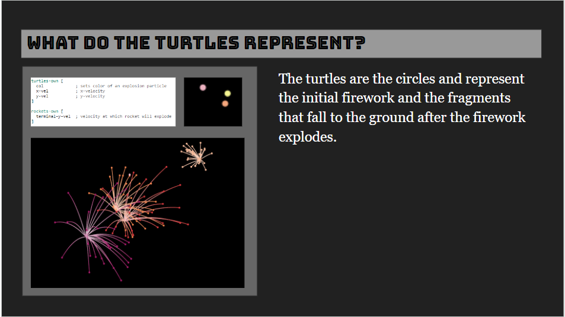

Home
Portfolio
About Me
This is my Portfolio Page!

This is my first project. We made a Blackjack game in Python!

Here is my second project. We made a Snake game in Python, this time with a mine that kills you if you touch it.

Scratch Project. We made a Star Clicker in Scratch, where you click a star to get points.

This project helped me gain insight into the state of bee colonies in the US. I learned that there were three states in particular that were outliers when compared to the rest, and I also learned that there are many different ways you can extract and represent data, whether this is through spreadsheets, excel, sums, graphs, lists, and so on.

This particular project allowed my group to analyze a particular Netlogo simulation called "Fireworks." We came up with conclusions about the real world based on the simulation, and presented our findings to the class.
Using App Inventor to make app game Duck Hunter.
Interactive Fiction Rags to Riches.
Black Jack game written in Python.
Modified bits in pictures.
Use data files to create graphs.
Using netlogo do remix of illusions.
Interactive Fiction Rags to Riches.